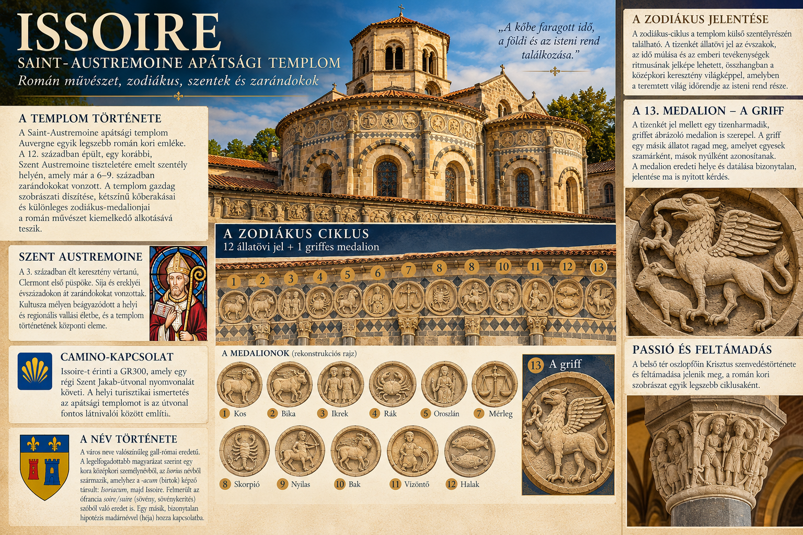

Mintatemplom · 3. feltöltés
ISSOIRE
Saint-Austremoine apátsági templom
Román művészet, szentkultusz, Passió–Feltámadás ciklus, zodiákus, zarándoklat és egy több mint másfél évezreden át alakuló helynév.

Vizuális térkép
Először nézzük meg egyben
Az összefoglaló tábla nem helyettesíti a részletes szöveget: segít elhelyezni egymáshoz képest a templom történetét, a zodiákust, Szent Austremoine kultuszát, a Camino-kapcsolatot és a Passió-ciklust.

Történet
A hely keresztény múltja
Issoire keresztény története jóval korábbi a ma látható román templomnál. A VI. századi Tours-i Gergely már említi a települést és egy templomot is. A helyi hagyomány szerint itt nyugodott Szent Austremoine, Auvergne korai evangelizátora és Clermont első püspökeként tisztelt alakja.
Az issoire-i apátság létezése a X. században már dokumentált. A XI. században a monostor Charroux apátságához kapcsolódott, és Austremoine ereklyéinek tisztelete hozzájárult a hely vallási tekintélyéhez. A ma látható nagy román kori templom főként a XII. században nyerte el formáját.
Az épület zarándoktemplomokra jellemző szerkezetet mutat: a szentély körül körüljáró fut, sugárkápolnák kapcsolódnak hozzá, alatta pedig kripta található. Ez lehetővé tette, hogy a hívek az ereklyék közelébe jussanak a főoltár liturgiájának megzavarása nélkül.
Névadó szent
Szent Austremoine — történelem és legenda
Austremoine kultusza legkésőbb a VI. században már Issoire-hoz kapcsolódott. A későbbi hagyomány a III. századba helyezte életét, Clermont első püspökének tekintette, és Auvergne megtérítésének kezdetét kötötte személyéhez.
A vértanúság részletei azonban későbbi hagiográfiai rétegekhez tartoznak. Ezeket nem történeti tényként, hanem a kultusz fejlődésének részeként őrizzük meg. A szent maradványai később Volvicba, majd Mozacba kerültek; Issoire ugyanakkor a középkorban ismét fontos Austremoine-ereklyével rendelkezett.
A templom egész története ebből a láncolatból érthető meg: szent → sír → ereklye → zarándoklat → monostor → román kori újjáépítés. Így az építészet nem csupán forma, hanem vallási használatból születő tér.
Etimológia
A név története — Issoire
Issoire neve nagyon régi, valószínűleg gall eredetű helynév továbbélése. Korai alakjai között szerepel az Iciodurum, majd a középkorban az Issiodorum / Yssiodorum, később az Yssoire, végül a mai Issoire.
A legelterjedtebb magyarázat az ókori nevet Iccio-duron / Iccio-durum összetételként értelmezi. Az első elem feltehetően a gall Iccius / Iccios személynévhez kapcsolódik. A második tag, a gall -duron / -durum, régebben rendszerint „erőd”-ként szerepelt a fordításokban, de jelentése tágabb lehetett: körülhatárolt hely, település, piac vagy városi központ. A név jelentése így hozzávetőleg „Iccius települése” vagy „Iccius városa” lehetett.
Létezik egy másik, földrajzi olvasat is, amely valamiféle „alsó határ” jelentéssel hozza kapcsolatba a nevet. Különösen érdekes, de jóval bizonytalanabb Pierre-Henri Billy madár-etimológiája: eszerint az első elem egy indoeurópai, nagyobb madárra utaló gyökkel függhetne össze. Ezt alternatív hipotézisként őrizzük meg.
A helyi auvergne-i/okcitán nyelvben a név Soire / Suire alakban is él. Ez különösen feltűnő a mai francia fül számára, mert Issoire kiejtésének utolsó szótagja egybeesik a francia soir („este”) hangzásával. A hasonlóság azonban csak hangalaki: a francia soir latin eredetű, és nincs etimológiai rokonságban Issoire nevével.
Egyszerűsítve a név fejlődése így írható fel: Iciodurum → Yssiodorum / Issiodorum → Yssoire → Issoire, miközben a helyi nyelvben Soire / Suire formák maradtak fenn.
Katalógustétel
ISSOIRE-001 — Az Utolsó vacsora
Az oszlopfő a szentély Passió–Feltámadás ciklusának egyik kulcsjelenete. Krisztus és az apostolok egy körbefutó étkezési kompozícióban jelennek meg; az asztal és a terítő erős vízszintes vonala szervezi a jelenetet.
Bibliai háttér: Mt 26,17–30; Mk 14,12–26; Lk 22,7–23; Jn 13. A szinoptikus evangéliumok az eucharisztikus szavakat emelik ki, János pedig a lábmosást, Júdás árulásának előkészítését és a búcsúbeszédet részletezi.
A szentély képi programja
Az Utolsó vacsora nem elszigetelt jelenet. A szentély oszlopfői Krisztus szenvedésének és feltámadásának történetéhez kapcsolódnak. A belső térben így egymás mellé kerül az evangéliumi narratíva, az oltár eucharisztikus liturgiája és Szent Austremoine ereklyekultusza.
Ami biztos
- Utolsó vacsora-jelenet
- a szentélyben található
- Passió–Feltámadás ciklus része
Ami valószínű
- az elhelyezés erősíti az eucharisztikus jelentést
- a ciklus térben is „olvasható” lehetett
Ami még vizsgálandó
- az apostolok pontos azonosítása
- Júdás helye
- eredeti középkori színezés
Ikonográfia
Passió és Feltámadás — kőbe faragott evangélium
A szentély figurális oszlopfői együtt nagyobb történetet alkotnak. Az Utolsó vacsora után Krisztus szenvedésének, halálának és feltámadásának jelenetei következnek. A teljes jelenetsort csak ellenőrzött ikonográfiai forrás alapján rekonstruáljuk, ezért nem állítunk fel bizonytalan sorrendet.
A kompozíciók elhelyezkedése különösen fontos: a hívek és a szerzetesek mozgás közben, különböző nézőpontokból láthatták őket. A középkori „olvasás” ezért nem feltétlenül egyenes vonalú képregényként működött, hanem a térben való haladással bontakozhatott ki.
Issoire-ban így egymás mellé kerül a liturgikus idő, az üdvtörténeti idő és — a külső zodiákus révén — a kozmikus idő. Ez nagyon erős összefüggés, de programatikus kapcsolatként csak értelmezés, amíg középkori forrás nem igazolja.
Katalógustétel
ISSOIRE-002 — A zodiákus ciklus
A templom külső szentélyrészén tizenkét állatövi jel és egy különleges 13. griffes medalion kapcsolódik egymáshoz. A ciklus az építészeti ritmus része: geometrikus kőberakások, oszlopocskák és faragott részletek közé illeszkedik.
A tizenkét jel
A román kori művészet itt antik eredetű formakincset használ fel keresztény környezetben. Különösen érdekes az Ikrek ábrázolása: a két alak vállán chlamys (rövid, vállra vetett ókori köpeny) jelenik meg, ami az antik előképek továbbélését jelzi.
A 13. medalion — a griff
A tizenkét zodiákusjegy mellett egy griffet ábrázoló medalion is szerepel. Eredeti helye, datálása és pontos ikonográfiai szerepe bizonytalan. A griff karmaiban egy másik állatot tart; ennek azonosítása sem teljesen biztos.
A zodiákus helyi értelmezése az évszakokat, az idő múlását és az emberi tevékenységek ritmusát kapcsolja össze a teremtett világ rendjével. Ez nem szükségképpen asztrológiai jóslás: inkább a kozmikus idő képi megjelenítéseként olvasható.
Ami biztos
- 12 zodiákusjel
- egy 13. griffes medalion
- a külső szentélyrész díszítéséhez tartozik
Ami valószínű
- antik eredetű képi hagyomány keresztény környezetben
- az idő és az év rendjére utaló jelentés
Nyitott kérdések
- a griff eredeti helye
- a medalion datálása
- a griff által megragadott állat azonosítása
Zarándoklat
Camino-kapcsolat
Issoire-t érinti a GR300, amely egy régi Szent Jakab-útvonal nyomvonalát követi. A helyi turisztikai ismertetés a Saint-Austremoine apátsági templomot is az útvonal fontos látnivalói között említi.
A kapcsolat jól illik a templom történetéhez: a hely már a középkorban is szentkultuszhoz és ereklyéhez kötődő zarándokpont volt. Így a mai Camino-kapcsolat egy régebbi zarándokvilágra rétegződik rá.
Ma
Élő hagyomány
A Saint-Austremoine ma is működő katolikus templom. Szent Austremoine neve a helyi plébániai identitásban tovább él, a kripta pedig ma is a szent ereklyehagyományához kapcsolódik.
Az épület vallási használata mellett kulturális térként is működik: orgonaprogramok és hangversenyek is helyet kapnak benne. A középkori szentély tehát nem lezárt múzeumi tér, hanem ma is használt templom.
Restaurálás
A színek kérdése
Issoire belseje ma feltűnően színes. A jelenlegi polikróm összhatás jelentős része XIX. századi restaurálások eredménye. Ezért a ma látható festést nem szabad automatikusan XII. századi állapotként bemutatni.
A román kori templomok eredetileg sem feltétlenül voltak csupasz kőszínűek, de a mai színezés külön történeti réteg. Ez jó példa arra, hogy amit ma látunk, nem mindig azonos azzal, amit a középkori ember látott.
Ha egyszer eljutunk ide
Mit keressünk?
Tanulóprojekt. A sorrenddel ásunk egyre mélyebbre: először a nagy kép, utána a történet, a faragványok, az ikonográfia, az etimológia, a zarándoklat és a nyitott kérdések.
A projektről